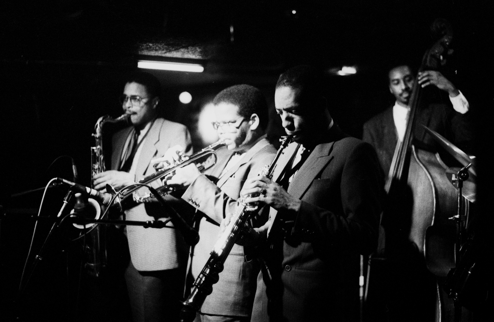

Intro
Jazz is a music genre that originated in African American communities of New Orleans, United States,in the late 19th and early 20th centuries, and developed from roots in blues and ragtime. Since the 1920s Jazz Age, jazz has become recognized as a major form of musical expression. It then emerged in the form of independent traditional and popular musical styles, all linked by the common bonds of African American and European American musical parentage with a performance orientation. Jazz is characterized by swing and blue notes, call and response vocals, polyrhythms and improvisation.
Genre
Big Band Jazz
Big Band refers to a jazz group of ten or more musicians, usually featuring at least three trumpets, two or more trombones, four or more saxophones, and a "rhythm section" of accompanists playing some combination of piano, guitar, bass, and drums. "Big band music" as a concept for music fans is identified most with the swing era, although there were large, jazz-oriented dance bands before the swing era of the 1930s and '40s, and large jazz-oriented concert bands after the swing era.
Soul Jazz
Soul Jazz is a musical genre that first became popular during the swinging 60s, when artists like Ramsey Lewis, Les McCann and Eddie Harris, and Herbie Hancock mixed elements of Jazz, Soul, and RnB together to create a whole new sound.
Artists
Louis Armstrong
.jpg)
Louis Daniel Armstrong (August 4, 1901– July 6, 1971), nicknamed Satchmo,[1] Satch or Pops, was an American trumpeter, composer, singer and occasional actor who was one of the most influential figures in jazz. His career spanned five decades, from the 1920s to the 1960s, and different eras in the history of jazz.
Billie Holiday

Eleanora Fagan (April 7, 1915 – July 17, 1959), professionally known as Billie Holiday, was an American jazz musician and singer-songwriter with a career spanning nearly thirty years. Nicknamed "Lady Day" by her friend and music partner Lester Young, Holiday had a seminal influence on jazz music and pop singing. Her vocal style, strongly inspired by jazz instrumentalists, pioneered a new way of manipulating phrasing and tempo.